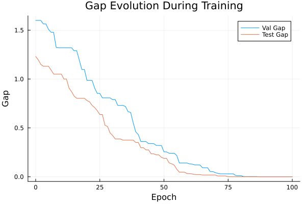
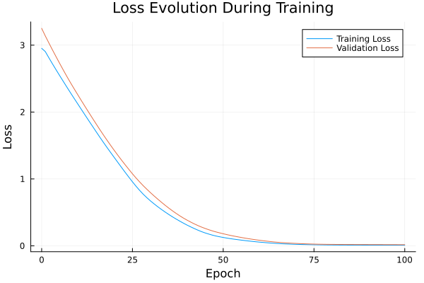

Basic Tutorial: Training with FYL on Argmax Benchmark
This tutorial demonstrates the basic workflow for training a policy using the Perturbed Fenchel-Young Loss algorithm.
Setup
using DecisionFocusedLearningAlgorithms
using DecisionFocusedLearningBenchmarks
using MLUtils: splitobs
using PlotsCreate Benchmark and Data
b = ArgmaxBenchmark()
dataset = generate_dataset(b, 100)
train_data, val_data, test_data = splitobs(dataset; at=(0.3, 0.3, 0.4))(DecisionFocusedLearningBenchmarks.Utils.DataSample{@NamedTuple{}, @NamedTuple{}, Matrix{Float32}, Vector{Float32}, Vector{Float32}}[DataSample(x=Float32[-1.09969 -0.0307512 … 1.53366 -0.882616; -0.0254348 -0.00498057 … 1.06598 0.885814; … ; -1.32078 0.890636 … 0.275106 0.988471; -0.15292 -1.20495 … 0.570176 0.69734], θ=Float32[-0.533764, 2.17747, -2.32038, 2.09852, -0.374913, -2.34321, -0.917887, 2.56714, -1.6897, -0.160034], y=Float32[0.0, 0.0, 0.0, 0.0, 0.0, 0.0, 0.0, 1.0, 0.0, 0.0]), DataSample(x=Float32[-0.447276 -0.822086 … 0.380356 0.155257; -0.31578 -1.53717 … 0.364476 -1.37706; … ; 1.32565 1.52971 … 0.138177 -2.64563; -0.509409 -0.382571 … -0.71876 -1.33245], θ=Float32[2.26344, 3.54005, -1.92947, 1.12301, 1.837, -2.53826, 0.660652, -2.76606, -0.389094, 0.427694], y=Float32[0.0, 1.0, 0.0, 0.0, 0.0, 0.0, 0.0, 0.0, 0.0, 0.0]), DataSample(x=Float32[0.460788 0.630165 … -1.22385 0.207832; 0.362846 -0.601304 … -0.409503 -0.166403; … ; -0.0505792 -2.30967 … -1.00479 0.467096; 1.07458 0.11199 … 1.01138 0.72652], θ=Float32[-1.50372, -1.13446, -0.217453, 0.2133, -2.40675, 1.04713, 0.861317, 1.23066, -0.0926081, -0.114165], y=Float32[0.0, 0.0, 0.0, 0.0, 0.0, 0.0, 0.0, 1.0, 0.0, 0.0]), DataSample(x=Float32[-1.3029 0.120331 … -0.119994 -0.403462; 0.668169 -0.0222208 … 0.0609892 -0.56252; … ; 0.887726 -0.365252 … -1.63871 0.00853143; -0.559658 0.0888483 … 1.62308 -0.734956], θ=Float32[0.488394, -0.418243, -1.79972, 0.804192, -3.32906, -0.807099, -0.631273, -1.19737, -3.1379, 1.28449], y=Float32[0.0, 0.0, 0.0, 0.0, 0.0, 0.0, 0.0, 0.0, 0.0, 1.0]), DataSample(x=Float32[-0.748593 1.03577 … 1.33271 0.306895; -0.593728 1.23559 … -0.766505 -0.913798; … ; 0.127033 0.909377 … 1.13982 0.251968; 0.0782839 -0.9624 … -1.68724 2.18783], θ=Float32[1.0609, 0.312169, -1.00216, -2.69035, 0.605818, 1.34902, 0.55169, -0.0499316, 3.2735, -1.81068], y=Float32[0.0, 0.0, 0.0, 0.0, 0.0, 0.0, 0.0, 0.0, 1.0, 0.0]), DataSample(x=Float32[-0.179528 -1.41232 … -0.455037 0.672094; -2.27849 -0.699791 … 0.738912 0.617003; … ; 1.68756 -0.0127219 … -2.18101 0.193236; 1.13501 0.208119 … 1.95359 -0.988054], θ=Float32[1.63694, 0.342551, 0.0369302, -0.234735, 2.39097, 0.676264, 1.68373, -2.02239, -3.69694, 0.265098], y=Float32[0.0, 0.0, 0.0, 0.0, 1.0, 0.0, 0.0, 0.0, 0.0, 0.0]), DataSample(x=Float32[-0.443179 0.0451745 … 0.307311 -1.66707; 0.856677 -0.579315 … 0.581031 -1.20705; … ; -0.0298164 0.0977303 … -2.07686 1.18576; 0.274705 2.09722 … -1.54222 -0.605595], θ=Float32[-0.641758, -0.868977, -2.99384, -1.91857, -1.30333, 1.46346, -1.87972, -1.66349, -0.872809, 2.89897], y=Float32[0.0, 0.0, 0.0, 0.0, 0.0, 0.0, 0.0, 0.0, 0.0, 1.0]), DataSample(x=Float32[-0.102718 -0.499885 … 0.997624 -0.112885; -0.382266 0.0247517 … -0.664946 1.22357; … ; 1.06588 -0.0144924 … -1.92489 -0.306661; 0.441014 -0.134747 … 0.579773 -0.535841], θ=Float32[0.356965, 0.547058, 0.259684, 0.0726612, 1.6339, 2.73447, 0.663515, 1.6954, -1.05934, -0.430633], y=Float32[0.0, 0.0, 0.0, 0.0, 0.0, 1.0, 0.0, 0.0, 0.0, 0.0]), DataSample(x=Float32[0.107002 -0.152 … -0.0683258 -0.629918; -1.74189 0.202774 … -1.72333 -1.27977; … ; -0.374213 1.17642 … -1.01385 2.27117; -2.33371 -1.18174 … 0.998578 -0.287824], θ=Float32[3.25586, 0.775112, -3.09185, 4.90599, -0.187022, 1.21867, -4.25385, -1.36842, 0.525616, 3.6969], y=Float32[0.0, 0.0, 0.0, 1.0, 0.0, 0.0, 0.0, 0.0, 0.0, 0.0]), DataSample(x=Float32[0.537052 0.305506 … -0.752398 0.191455; 0.369934 0.152321 … 0.83446 -0.595079; … ; 0.0971857 -0.524812 … -0.119123 -0.77339; 0.67355 -1.00076 … 0.565547 1.13278], θ=Float32[-1.45618, 0.537089, 0.50223, -0.402287, 1.57541, 1.20218, 4.01883, -1.3486, -1.28588, -0.956616], y=Float32[0.0, 0.0, 0.0, 0.0, 0.0, 0.0, 1.0, 0.0, 0.0, 0.0]) … DataSample(x=Float32[-0.966131 -0.13182 … 2.22547 1.30836; -0.587392 -0.565356 … -1.26972 -0.525858; … ; -0.358962 0.835615 … 0.432456 0.0533742; -0.0546607 -0.71296 … -0.743025 -0.0745496], θ=Float32[0.755299, 3.16195, -0.950787, -0.26961, -1.33211, 2.86057, 1.87832, 1.72644, 1.88578, -0.156473], y=Float32[0.0, 1.0, 0.0, 0.0, 0.0, 0.0, 0.0, 0.0, 0.0, 0.0]), DataSample(x=Float32[-1.31441 -0.156162 … 0.820969 -0.473981; -1.58429 0.829429 … 0.0488443 1.24585; … ; 0.241766 -0.735482 … -0.0666868 2.31969; 1.21715 -1.10843 … -0.242667 -0.362876], θ=Float32[1.93258, 0.0347506, -0.799342, -2.48885, -0.464289, -0.0241876, 2.05664, -0.635421, 0.629991, 0.537595], y=Float32[0.0, 0.0, 0.0, 0.0, 0.0, 0.0, 1.0, 0.0, 0.0, 0.0]), DataSample(x=Float32[1.90467 -1.56032 … -0.33398 1.53678; 0.793746 -0.410601 … -0.448906 -2.59058; … ; -0.473249 0.524097 … -1.18258 0.827777; 0.604278 -0.510307 … -0.607023 0.869448], θ=Float32[-2.72884, 2.5069, -1.36745, -0.304636, -1.23314, 2.04776, -0.621033, 0.82853, 0.708239, 0.514346], y=Float32[0.0, 1.0, 0.0, 0.0, 0.0, 0.0, 0.0, 0.0, 0.0, 0.0]), DataSample(x=Float32[-1.66422 1.64734 … -0.452024 0.536378; -1.08073 -2.30012 … 1.0689 -0.545846; … ; -0.669421 0.167568 … 0.430053 -0.191202; -0.144081 -0.806776 … -0.933171 1.85111], θ=Float32[1.40309, 3.0988, 0.0100297, 0.337845, 0.655914, -0.49316, 1.44229, 1.6735, -0.18727, -1.77331], y=Float32[0.0, 1.0, 0.0, 0.0, 0.0, 0.0, 0.0, 0.0, 0.0, 0.0]), DataSample(x=Float32[-0.167308 -0.833216 … 0.204941 0.678734; 0.0549808 -0.514472 … 0.340699 -1.11474; … ; -0.010823 -0.234118 … 0.578618 1.23405; -0.787153 0.960754 … -0.243693 0.711121], θ=Float32[0.761938, -0.593162, 0.0531755, 0.218863, -0.696287, -0.217886, -1.15368, 0.623732, 0.125184, 1.39114], y=Float32[0.0, 0.0, 0.0, 0.0, 0.0, 0.0, 0.0, 0.0, 0.0, 1.0]), DataSample(x=Float32[-2.33627 -0.698407 … -0.300641 0.115777; 0.616579 -2.0175 … -0.80618 0.69392; … ; -1.30566 0.316247 … 0.772539 -0.580123; 1.35236 -0.207825 … -0.460776 0.681848], θ=Float32[-2.20231, 2.46969, -0.610366, -3.13426, 2.62756, -0.598722, -1.07515, 1.82465, 2.00077, -1.64086], y=Float32[0.0, 0.0, 0.0, 0.0, 1.0, 0.0, 0.0, 0.0, 0.0, 0.0]), DataSample(x=Float32[0.823172 -1.10912 … 0.146495 -0.325556; 1.27586 0.75727 … 1.84307 -0.408361; … ; -0.500309 -1.52471 … -0.80579 -1.27302; 0.211954 1.9196 … -0.922525 1.34752], θ=Float32[-1.31976, -3.07438, -0.0503483, -1.67624, -0.282138, -0.501016, -0.355593, 0.705505, -1.30927, -2.91205], y=Float32[0.0, 0.0, 0.0, 0.0, 0.0, 0.0, 0.0, 1.0, 0.0, 0.0]), DataSample(x=Float32[-1.00297 -0.0946551 … -0.46879 -0.0912238; 0.293549 -1.88736 … 1.12118 -0.142426; … ; -1.29708 0.119203 … 0.386618 1.93623; 1.92488 -0.233805 … 2.13929 1.15021], θ=Float32[-2.57211, 2.84004, -0.423542, -0.25821, -2.05105, -1.11752, -3.46363, 2.06274, -1.98239, 0.397564], y=Float32[0.0, 1.0, 0.0, 0.0, 0.0, 0.0, 0.0, 0.0, 0.0, 0.0]), DataSample(x=Float32[0.65486 -0.497783 … -1.77888 1.03553; -0.22247 0.519886 … 1.86981 -0.378075; … ; 1.50634 -0.262915 … -0.202968 -0.69857; 0.781842 1.26632 … 0.767981 -0.232794], θ=Float32[1.18427, -0.939702, 1.54789, -0.54131, -2.46387, -2.20393, -0.878051, -0.846998, -2.29227, 0.319998], y=Float32[0.0, 0.0, 1.0, 0.0, 0.0, 0.0, 0.0, 0.0, 0.0, 0.0]), DataSample(x=Float32[-0.0627724 0.995461 … 0.620119 -0.923198; -0.715476 1.59364 … -0.232235 1.84971; … ; -1.13475 -1.01154 … 0.0744917 -2.52503; 1.38843 -0.52933 … -0.728101 -1.76598], θ=Float32[-0.815146, -1.09585, -1.95431, -0.846931, 1.78901, -0.352701, -0.0557062, 0.700394, 0.488835, -2.30846], y=Float32[0.0, 0.0, 0.0, 0.0, 1.0, 0.0, 0.0, 0.0, 0.0, 0.0])], DecisionFocusedLearningBenchmarks.Utils.DataSample{@NamedTuple{}, @NamedTuple{}, Matrix{Float32}, Vector{Float32}, Vector{Float32}}[DataSample(x=Float32[-0.861277 1.21027 … 1.50745 -1.28585; -0.505141 -0.0362046 … 0.324835 0.458188; … ; 1.02781 -0.937609 … -0.177252 0.43649; -0.725571 0.683439 … -0.486389 -1.0653], θ=Float32[2.53832, -0.805044, 0.770676, -0.0503141, 1.95251, -0.107372, -0.480219, -0.362392, 0.253609, 1.40853], y=Float32[1.0, 0.0, 0.0, 0.0, 0.0, 0.0, 0.0, 0.0, 0.0, 0.0]), DataSample(x=Float32[0.835666 0.664166 … 0.0884703 1.14636; -1.09029 -0.707004 … -0.719717 1.01123; … ; 2.10624 -1.23102 … -1.40854 0.629428; -0.275678 -0.0358153 … -1.85293 0.254653], θ=Float32[2.7442, -0.383126, 1.95507, -0.862266, -1.57471, 1.30556, -0.625409, -0.423375, 2.06118, -0.96087], y=Float32[1.0, 0.0, 0.0, 0.0, 0.0, 0.0, 0.0, 0.0, 0.0, 0.0]), DataSample(x=Float32[-0.256747 -1.68606 … 1.43342 -0.209013; 1.70562 1.18129 … -0.168688 -0.00652678; … ; 0.761407 0.959281 … -1.37872 -2.31017; 1.07333 -0.186586 … -1.54456 -1.3008], θ=Float32[-3.31107, -0.447076, 0.29246, -4.02065, -1.05801, -3.31258f-5, -1.12723, 0.61431, 0.144204, -0.35478], y=Float32[0.0, 0.0, 0.0, 0.0, 0.0, 0.0, 0.0, 1.0, 0.0, 0.0]), DataSample(x=Float32[0.409386 1.18707 … -0.454845 0.235293; -0.447721 0.45926 … 0.0622606 1.5538; … ; -1.37883 -0.524286 … 0.86638 0.675445; -0.128911 -0.897087 … -1.19816 1.38718], θ=Float32[0.22844, -0.428892, 1.56024, -0.567844, -0.559145, -1.42265, 0.44505, -2.52308, 1.99168, -3.14164], y=Float32[0.0, 0.0, 0.0, 0.0, 0.0, 0.0, 0.0, 0.0, 1.0, 0.0]), DataSample(x=Float32[-0.156029 -0.284398 … 0.26254 0.021314; 0.615052 -0.0708318 … -0.565927 0.0574838; … ; -0.434699 -0.933095 … -0.344996 -0.0262064; -0.122669 1.36869 … -1.19456 -1.08436], θ=Float32[-0.787885, -1.55719, 0.604337, 1.60293, 0.111262, 0.0590715, 1.6985, -0.0200745, 0.858025, 0.263943], y=Float32[0.0, 0.0, 0.0, 0.0, 0.0, 0.0, 1.0, 0.0, 0.0, 0.0]), DataSample(x=Float32[-1.54697 -0.502283 … 1.18604 -1.10708; 0.513292 1.9752 … -1.22402 0.714318; … ; -0.43768 -0.129554 … -1.44145 -1.57423; -1.37623 0.293574 … -0.243193 1.00863], θ=Float32[0.157306, -1.8942, 1.31921, 2.67255, 2.26513, -1.40772, -0.156478, -0.75923, -0.174, -2.89515], y=Float32[0.0, 0.0, 0.0, 1.0, 0.0, 0.0, 0.0, 0.0, 0.0, 0.0]), DataSample(x=Float32[-1.2566 -0.205492 … -1.42322 0.62967; -0.552797 0.506485 … 0.255888 -0.832225; … ; -0.059814 0.13582 … 1.10131 -0.0910619; -1.24521 -0.271686 … 0.3092 1.34505], θ=Float32[2.36478, -0.20186, 2.06282, -0.975351, 3.85418, -4.23637, 1.24632, 1.49366, 0.391451, -0.439071], y=Float32[0.0, 0.0, 0.0, 0.0, 1.0, 0.0, 0.0, 0.0, 0.0, 0.0]), DataSample(x=Float32[-0.779953 -1.29734 … 0.584467 -0.596378; -0.331357 0.828851 … 0.170169 0.980179; … ; -0.112068 -1.04595 … -0.702241 -1.40476; -0.0217787 0.221817 … 0.860661 1.12076], θ=Float32[0.279936, -1.83507, 0.765465, 2.00046, 1.55352, -2.01191, 1.63693, -1.25991, -0.939003, -3.05986], y=Float32[0.0, 0.0, 0.0, 1.0, 0.0, 0.0, 0.0, 0.0, 0.0, 0.0]), DataSample(x=Float32[0.603433 0.0134908 … 1.53132 -0.317194; -0.126132 0.913089 … 0.084768 -0.443342; … ; -0.683172 0.550298 … -1.01432 -0.0187051; -1.4001 -1.10438 … -0.570735 0.00169125], θ=Float32[0.614317, 0.984351, 1.33351, 0.906756, 1.68407, -0.317196, 1.8517, 1.24403, -0.220626, 0.530054], y=Float32[0.0, 0.0, 0.0, 0.0, 0.0, 0.0, 1.0, 0.0, 0.0, 0.0]), DataSample(x=Float32[-0.792451 -0.803883 … 1.69212 -2.3075; 0.806297 -0.825171 … -0.962908 -0.565811; … ; -0.539964 1.06168 … -0.672791 -1.60432; -0.283152 0.680497 … -0.131585 0.805953], θ=Float32[-0.513874, 0.4737, -0.895244, -0.696011, 2.87007, 0.314371, -0.598369, -0.181366, -0.243695, -1.26175], y=Float32[0.0, 0.0, 0.0, 0.0, 1.0, 0.0, 0.0, 0.0, 0.0, 0.0]) … DataSample(x=Float32[0.302638 -0.00239897 … 0.433057 0.906261; -0.291326 1.90285 … 0.141165 1.43361; … ; -1.07586 0.818069 … 0.563867 -1.04127; -0.868946 0.308413 … -0.292863 0.402625], θ=Float32[0.654645, -1.51474, 1.2799, -1.99269, 0.557552, 0.826969, 2.23239, -1.75039, 0.484559, -3.92092], y=Float32[0.0, 0.0, 0.0, 0.0, 0.0, 0.0, 1.0, 0.0, 0.0, 0.0]), DataSample(x=Float32[0.300296 1.09699 … -2.28009 1.62999; 1.4001 -1.12803 … 0.838945 -0.656044; … ; 0.801239 -1.35571 … -0.57806 -0.774775; 2.28288 -0.701415 … -0.973287 -0.313452], θ=Float32[-3.58113, 1.4366, 1.79705, 1.69915, 0.641476, -1.81611, 1.0303, -4.1203, -0.468455, -0.516273], y=Float32[0.0, 0.0, 1.0, 0.0, 0.0, 0.0, 0.0, 0.0, 0.0, 0.0]), DataSample(x=Float32[0.911049 1.02466 … 0.756649 -2.24763; -1.02162 -2.61275 … 0.0177316 -0.361714; … ; -1.72765 0.949031 … -1.01006 -0.0710327; -1.02685 0.211443 … -1.3823 -0.117467], θ=Float32[0.298471, 3.57417, 1.34475, -0.241751, -3.22277, 1.11859, 1.07716, -2.5155, 0.0819094, 0.267204], y=Float32[0.0, 1.0, 0.0, 0.0, 0.0, 0.0, 0.0, 0.0, 0.0, 0.0]), DataSample(x=Float32[0.481907 0.879237 … 1.09886 1.89056; 1.03982 -0.0327997 … 0.223357 0.851834; … ; -0.104314 -1.18454 … -1.60158 -0.605339; 1.37846 -0.437271 … 0.238863 -1.1564], θ=Float32[-2.32795, -0.684111, -1.33451, -0.959246, -0.778205, 0.942294, -0.204144, -1.90785, -2.4228, -1.03356], y=Float32[0.0, 0.0, 0.0, 0.0, 0.0, 1.0, 0.0, 0.0, 0.0, 0.0]), DataSample(x=Float32[-0.914636 0.427372 … 0.602024 0.0657023; 0.568333 -0.0115044 … 2.11933 -0.172286; … ; -0.801616 1.84657 … -0.476426 0.91832; -0.850155 -1.46565 … 0.423971 0.333912], θ=Float32[-0.612802, 1.95878, 1.26972, -1.765, 4.31705, -1.462, 0.109079, -1.0283, -3.39904, 0.734176], y=Float32[0.0, 0.0, 0.0, 0.0, 1.0, 0.0, 0.0, 0.0, 0.0, 0.0]), DataSample(x=Float32[-0.65188 2.18981 … -0.344034 1.323; 0.57988 -0.0766495 … 1.64359 0.959995; … ; 2.44131 0.852972 … 0.115924 -1.78877; 0.691782 0.04171 … -0.788684 -0.876173], θ=Float32[0.438371, 0.072304, -0.526881, -0.109342, -0.0984158, 1.81337, -2.8346, 2.50047, -0.206101, -1.66245], y=Float32[0.0, 0.0, 0.0, 0.0, 0.0, 0.0, 0.0, 1.0, 0.0, 0.0]), DataSample(x=Float32[-3.11928 0.182004 … 0.444639 -0.409539; 0.468016 -1.21557 … 1.63547 0.866228; … ; 1.2775 2.17251 … 0.264467 -0.949423; -0.0206389 1.1453 … 0.138135 0.536022], θ=Float32[1.54803, 1.29038, -2.17929, -0.425477, -1.13608, -0.448307, 0.436491, -4.0136, -1.54778, -2.73427], y=Float32[1.0, 0.0, 0.0, 0.0, 0.0, 0.0, 0.0, 0.0, 0.0, 0.0]), DataSample(x=Float32[-1.70944 1.90898 … 1.11101 2.81528; -0.590774 0.0581244 … 0.66261 -0.48006; … ; -1.54295 0.774181 … 0.0512366 -0.298724; 0.803718 0.00731914 … -0.668651 -0.822788], θ=Float32[-1.20695, 0.409631, -1.86891, -0.353798, -0.0802686, -3.50182, 0.490598, -2.23073, -1.25613, 0.31421], y=Float32[0.0, 0.0, 0.0, 0.0, 0.0, 0.0, 1.0, 0.0, 0.0, 0.0]), DataSample(x=Float32[-1.62567 1.66109 … -1.55403 -2.13514; 0.0233602 0.302194 … 0.185787 -0.180856; … ; -1.86735 0.217762 … 0.588192 0.233679; -0.726595 1.65095 … 0.619375 -0.901148], θ=Float32[0.152647, -2.31917, -2.02074, -0.128214, -0.424298, -1.01044, 1.65241, 1.08443, -0.564549, 1.70711], y=Float32[0.0, 0.0, 0.0, 0.0, 0.0, 0.0, 0.0, 0.0, 0.0, 1.0]), DataSample(x=Float32[0.708282 0.162619 … -0.127758 -0.42515; -0.537009 0.321188 … 0.139652 0.36358; … ; 0.538732 -0.254222 … -0.277438 -1.5423; -1.05112 -3.4371 … -1.26262 0.442559], θ=Float32[2.05639, 2.36661, -1.79913, -0.928283, -0.931438, -0.596485, 3.08267, 1.62006, 0.591405, -1.5255], y=Float32[0.0, 0.0, 0.0, 0.0, 0.0, 0.0, 1.0, 0.0, 0.0, 0.0])], DecisionFocusedLearningBenchmarks.Utils.DataSample{@NamedTuple{}, @NamedTuple{}, Matrix{Float32}, Vector{Float32}, Vector{Float32}}[DataSample(x=Float32[-0.0497111 -1.24858 … 0.276539 -0.558203; -0.923967 -0.873323 … -1.08606 0.689102; … ; -2.18379 -1.51714 … 1.26165 1.13615; -0.450208 -1.13154 … -2.77333 -0.507503], θ=Float32[-0.198993, 1.48374, 0.709232, -0.843512, -0.855717, -1.44762, 0.961921, -0.321059, 4.94645, 0.984213], y=Float32[0.0, 0.0, 0.0, 0.0, 0.0, 0.0, 0.0, 0.0, 1.0, 0.0]), DataSample(x=Float32[-2.38166 -0.185394 … 2.15054 -0.800454; 0.708344 0.996692 … 0.911055 -1.24653; … ; -1.62122 -1.87606 … -0.645239 1.66712; 0.0549582 -0.379574 … 1.05918 0.319863], θ=Float32[-1.4832, -1.41112, 0.7558, 1.84777, -0.490404, 0.869602, 0.693271, 2.29444, -2.53213, 1.54804], y=Float32[0.0, 0.0, 0.0, 0.0, 0.0, 0.0, 0.0, 1.0, 0.0, 0.0]), DataSample(x=Float32[0.683917 -0.587325 … -0.758743 0.131455; 0.269543 -0.721963 … -0.620198 -0.438885; … ; -1.36634 -0.514704 … 0.387058 0.793436; -0.807377 2.57346 … 0.0523562 -0.96748], θ=Float32[-0.659569, -1.57837, 0.0116383, -2.53867, -0.764283, -1.23497, -4.16954, 0.911281, 1.03478, 2.14952], y=Float32[0.0, 0.0, 0.0, 0.0, 0.0, 0.0, 0.0, 0.0, 0.0, 1.0]), DataSample(x=Float32[-0.758441 0.786397 … -0.372398 0.26947; 1.21734 -0.464632 … -0.124261 -2.56779; … ; 1.15813 0.199473 … 0.615756 -0.232517; 1.36407 0.14976 … -0.146476 -0.0197276], θ=Float32[-1.98576, 0.328124, -1.59815, -2.0805, 0.952643, -0.395385, -1.32287, -2.39588, 0.786521, 1.27195], y=Float32[0.0, 0.0, 0.0, 0.0, 0.0, 0.0, 0.0, 0.0, 0.0, 1.0]), DataSample(x=Float32[-0.476756 -1.79274 … -0.859707 -0.617719; 0.731458 -0.391603 … -0.439485 1.59474; … ; -0.659415 0.083533 … 0.354119 -0.528488; -1.62458 -2.85295 … 0.110647 0.271629], θ=Float32[0.33599, 2.40325, 1.76481, 2.92633, 3.0115, 0.555533, 1.1031, 1.12881, 0.612144, -1.21982], y=Float32[0.0, 0.0, 0.0, 0.0, 1.0, 0.0, 0.0, 0.0, 0.0, 0.0]), DataSample(x=Float32[-0.852194 -1.26116 … 1.78836 -2.73746; -1.5215 0.228923 … 0.724349 2.08172; … ; 0.212675 0.364866 … 0.210333 0.300385; -0.807368 -2.02151 … 0.0149742 2.05177], θ=Float32[3.09806, 1.58024, 1.24423, 2.21349, -0.695955, -3.83479, -1.82416, 0.245626, -0.753001, -3.68378], y=Float32[1.0, 0.0, 0.0, 0.0, 0.0, 0.0, 0.0, 0.0, 0.0, 0.0]), DataSample(x=Float32[1.21155 0.126008 … 0.726841 -0.0653095; 1.61836 1.25779 … -0.513831 0.623057; … ; -1.49674 1.00664 … -1.83863 1.09076; -2.09148 -2.15881 … -0.84191 -0.792105], θ=Float32[-2.4798, 0.989204, 0.509609, -1.02177, -5.95115, 1.04082, -1.45399, 1.51854, 0.473777, 1.37743], y=Float32[0.0, 0.0, 0.0, 0.0, 0.0, 0.0, 0.0, 1.0, 0.0, 0.0]), DataSample(x=Float32[0.825827 0.515146 … 0.556152 -1.37554; -0.177475 -0.534786 … 0.489255 -1.62898; … ; -1.1526 0.928588 … 0.0675418 -0.347458; -1.89195 -1.17008 … -0.209193 0.591565], θ=Float32[0.516064, 1.45625, 1.48692, -0.247142, -1.29641, 1.60184, -1.11877, 0.497936, -0.0106442, 0.732149], y=Float32[0.0, 0.0, 0.0, 0.0, 0.0, 1.0, 0.0, 0.0, 0.0, 0.0]), DataSample(x=Float32[-1.23418 -0.944444 … -0.0108651 0.294118; -0.0887495 1.25243 … 0.179643 -0.75966; … ; -0.854043 1.58625 … 0.5047 2.11625; 0.749935 0.44617 … 0.251004 0.445967], θ=Float32[-0.746812, -0.065184, 2.30386, -1.32341, -0.719947, -0.850927, 0.600012, 2.81798, -0.0713109, 1.82431], y=Float32[0.0, 0.0, 0.0, 0.0, 0.0, 0.0, 0.0, 1.0, 0.0, 0.0]), DataSample(x=Float32[-0.375594 -0.915992 … -0.172237 -0.122258; 0.564412 -0.410226 … 0.561511 0.349875; … ; 0.611521 1.40898 … 0.665406 0.735379; -1.68133 1.0918 … 1.2567 -0.194624], θ=Float32[2.36565, 0.0439571, -0.830378, -3.81694, 1.06354, 1.09998, -2.04795, 0.851297, -0.862888, 0.340816], y=Float32[1.0, 0.0, 0.0, 0.0, 0.0, 0.0, 0.0, 0.0, 0.0, 0.0]) … DataSample(x=Float32[-0.175369 0.714787 … -1.42856 0.114337; 0.190681 -0.7187 … -1.62547 1.3045; … ; -0.320799 1.01532 … -0.0197015 1.38334; 0.893949 0.750731 … -0.4037 0.0315485], θ=Float32[-0.982875, 1.26764, -2.2956, 2.00681, 0.306855, -1.0763, -0.57826, 1.09327, 2.50009, -0.985646], y=Float32[0.0, 0.0, 0.0, 0.0, 0.0, 0.0, 0.0, 0.0, 1.0, 0.0]), DataSample(x=Float32[-0.904622 -0.632597 … 0.258893 -0.358069; -0.943792 1.64301 … -0.993884 0.23699; … ; -0.617193 0.113684 … 0.632535 0.182; -1.9548 1.14399 … -1.32127 1.11815], θ=Float32[2.1932, -2.76579, 1.78048, 1.11739, -3.00184, -3.15297, 0.352495, 3.74951, 3.02041, -1.28235], y=Float32[0.0, 0.0, 0.0, 0.0, 0.0, 0.0, 0.0, 1.0, 0.0, 0.0]), DataSample(x=Float32[-0.546808 1.6776 … 0.662444 -1.03103; -2.15634 -1.16808 … 0.319261 -0.31443; … ; 1.19882 1.36964 … 1.24979 0.733177; -0.544433 1.82369 … -1.74504 -0.623669], θ=Float32[3.14533, -0.455124, 0.783299, -1.601, -1.54739, -0.493654, -2.38205, -1.47419, 1.50938, 1.16356], y=Float32[1.0, 0.0, 0.0, 0.0, 0.0, 0.0, 0.0, 0.0, 0.0, 0.0]), DataSample(x=Float32[1.40143 0.786618 … 1.0829 0.640054; -0.227843 0.774176 … 0.644102 0.850015; … ; 1.56914 0.472964 … -1.20457 0.0379151; 1.33459 1.32598 … -0.628479 -1.16733], θ=Float32[0.0442552, -1.69421, -1.45011, -2.65541, 1.57541, -0.984101, -0.49055, -1.70993, -1.00563, -0.0236467], y=Float32[0.0, 0.0, 0.0, 0.0, 1.0, 0.0, 0.0, 0.0, 0.0, 0.0]), DataSample(x=Float32[0.069497 0.167747 … 0.26469 -0.714516; -1.12083 -1.03135 … 0.25102 0.373149; … ; -0.961144 -2.72138 … -0.492517 -1.74857; -0.394486 -2.36 … 1.40365 0.414201], θ=Float32[-0.29469, 0.852045, -0.787833, 0.214696, -1.04436, -0.175408, -2.21732, -1.66924, -1.61008, -1.81441], y=Float32[0.0, 1.0, 0.0, 0.0, 0.0, 0.0, 0.0, 0.0, 0.0, 0.0]), DataSample(x=Float32[0.58976 -0.0644287 … 0.108618 -0.259752; -0.431068 -1.28591 … -0.869155 -0.747702; … ; -0.296643 0.543405 … 0.218318 1.17059; -0.201342 -1.26569 … 0.951095 0.477661], θ=Float32[0.339184, 2.55284, -2.31993, -1.66556, 1.23242, -2.1035, 0.341885, -0.878299, -0.118334, 0.728028], y=Float32[0.0, 1.0, 0.0, 0.0, 0.0, 0.0, 0.0, 0.0, 0.0, 0.0]), DataSample(x=Float32[-0.208573 -0.568592 … -0.0556367 0.432788; -0.455639 -0.95082 … -2.1948 0.0056504; … ; 0.233999 0.0876322 … -0.460939 0.174029; -0.627011 -0.419168 … 1.03057 -1.01983], θ=Float32[0.878716, 2.47779, -1.89906, 0.101178, 1.01486, 2.61381, 0.281204, 3.74677, 1.40417, 1.13871], y=Float32[0.0, 0.0, 0.0, 0.0, 0.0, 0.0, 0.0, 1.0, 0.0, 0.0]), DataSample(x=Float32[-0.719729 -0.977728 … 0.761067 0.450399; 0.977875 -0.464148 … 0.588007 -0.0448286; … ; -0.855781 0.525057 … -0.659612 0.819931; -1.5634 -0.00964111 … -0.986226 0.891829], θ=Float32[0.217468, 1.40348, -1.11488, -0.92149, 2.58507, -3.3782, 2.61907, 0.837122, -0.961747, -0.355885], y=Float32[0.0, 0.0, 0.0, 0.0, 0.0, 0.0, 1.0, 0.0, 0.0, 0.0]), DataSample(x=Float32[-0.103205 1.44204 … -0.49704 0.0242625; -0.385904 0.154649 … 0.610226 -0.38216; … ; 1.65175 0.286366 … 0.91283 0.320386; -2.28292 1.00673 … 0.47097 -0.255469], θ=Float32[3.62588, -1.65492, 0.0393863, -1.08883, -0.498588, -2.84479, -1.06916, 0.151696, -0.668889, -0.262956], y=Float32[1.0, 0.0, 0.0, 0.0, 0.0, 0.0, 0.0, 0.0, 0.0, 0.0]), DataSample(x=Float32[0.919499 -0.809402 … -0.258693 0.316197; -0.410452 0.63564 … -1.57987 -0.287942; … ; -0.23831 0.564581 … 0.488047 -0.575333; -1.19417 0.721752 … -0.143792 0.57478], θ=Float32[1.01429, -1.11104, -0.0111026, 1.00324, 0.826287, 0.862562, -0.725688, -0.0187685, 1.44787, -1.28749], y=Float32[0.0, 0.0, 0.0, 0.0, 0.0, 0.0, 0.0, 0.0, 1.0, 0.0])], DecisionFocusedLearningBenchmarks.Utils.DataSample{@NamedTuple{}, @NamedTuple{}, Matrix{Float32}, Vector{Float32}, Vector{Float32}}[])Create Policy
model = generate_statistical_model(b; seed=0)
maximizer = generate_maximizer(b)
policy = DFLPolicy(model, maximizer)DFLPolicy{Flux.Chain{Tuple{Flux.Dense{typeof(identity), Matrix{Float32}, Bool}, typeof(vec)}}, typeof(DecisionFocusedLearningBenchmarks.Argmax.one_hot_argmax)}(Chain(Dense(5 => 1; bias=false), vec), DecisionFocusedLearningBenchmarks.Argmax.one_hot_argmax)Configure Algorithm
algorithm = PerturbedFenchelYoungLossImitation(;
nb_samples=10, ε=0.1, threaded=true, seed=0
)PerturbedFenchelYoungLossImitation{Optimisers.Adam{Float64, Tuple{Float64, Float64}, Float64}, Int64}(10, 0.1, true, Optimisers.Adam(eta=0.001, beta=(0.9, 0.999), epsilon=1.0e-8), 0, false)Define Metrics to track during training
validation_loss_metric = FYLLossMetric(val_data, :validation_loss)
val_gap_metric = FunctionMetric(:val_gap, val_data) do ctx, data
return compute_gap(b, data, ctx.policy.statistical_model, ctx.policy.maximizer)
end
test_gap_metric = FunctionMetric(:test_gap, test_data) do ctx, data
return compute_gap(b, data, ctx.policy.statistical_model, ctx.policy.maximizer)
end
metrics = (validation_loss_metric, val_gap_metric, test_gap_metric)(FYLLossMetric{SubArray{DecisionFocusedLearningBenchmarks.Utils.DataSample{@NamedTuple{}, @NamedTuple{}, Matrix{Float32}, Vector{Float32}, Vector{Float32}}, 1, Vector{DecisionFocusedLearningBenchmarks.Utils.DataSample{@NamedTuple{}, @NamedTuple{}, Matrix{Float32}, Vector{Float32}, Vector{Float32}}}, Tuple{UnitRange{Int64}}, true}}(DecisionFocusedLearningBenchmarks.Utils.DataSample{@NamedTuple{}, @NamedTuple{}, Matrix{Float32}, Vector{Float32}, Vector{Float32}}[DataSample(x=Float32[-0.861277 1.21027 … 1.50745 -1.28585; -0.505141 -0.0362046 … 0.324835 0.458188; … ; 1.02781 -0.937609 … -0.177252 0.43649; -0.725571 0.683439 … -0.486389 -1.0653], θ=Float32[2.53832, -0.805044, 0.770676, -0.0503141, 1.95251, -0.107372, -0.480219, -0.362392, 0.253609, 1.40853], y=Float32[1.0, 0.0, 0.0, 0.0, 0.0, 0.0, 0.0, 0.0, 0.0, 0.0]), DataSample(x=Float32[0.835666 0.664166 … 0.0884703 1.14636; -1.09029 -0.707004 … -0.719717 1.01123; … ; 2.10624 -1.23102 … -1.40854 0.629428; -0.275678 -0.0358153 … -1.85293 0.254653], θ=Float32[2.7442, -0.383126, 1.95507, -0.862266, -1.57471, 1.30556, -0.625409, -0.423375, 2.06118, -0.96087], y=Float32[1.0, 0.0, 0.0, 0.0, 0.0, 0.0, 0.0, 0.0, 0.0, 0.0]), DataSample(x=Float32[-0.256747 -1.68606 … 1.43342 -0.209013; 1.70562 1.18129 … -0.168688 -0.00652678; … ; 0.761407 0.959281 … -1.37872 -2.31017; 1.07333 -0.186586 … -1.54456 -1.3008], θ=Float32[-3.31107, -0.447076, 0.29246, -4.02065, -1.05801, -3.31258f-5, -1.12723, 0.61431, 0.144204, -0.35478], y=Float32[0.0, 0.0, 0.0, 0.0, 0.0, 0.0, 0.0, 1.0, 0.0, 0.0]), DataSample(x=Float32[0.409386 1.18707 … -0.454845 0.235293; -0.447721 0.45926 … 0.0622606 1.5538; … ; -1.37883 -0.524286 … 0.86638 0.675445; -0.128911 -0.897087 … -1.19816 1.38718], θ=Float32[0.22844, -0.428892, 1.56024, -0.567844, -0.559145, -1.42265, 0.44505, -2.52308, 1.99168, -3.14164], y=Float32[0.0, 0.0, 0.0, 0.0, 0.0, 0.0, 0.0, 0.0, 1.0, 0.0]), DataSample(x=Float32[-0.156029 -0.284398 … 0.26254 0.021314; 0.615052 -0.0708318 … -0.565927 0.0574838; … ; -0.434699 -0.933095 … -0.344996 -0.0262064; -0.122669 1.36869 … -1.19456 -1.08436], θ=Float32[-0.787885, -1.55719, 0.604337, 1.60293, 0.111262, 0.0590715, 1.6985, -0.0200745, 0.858025, 0.263943], y=Float32[0.0, 0.0, 0.0, 0.0, 0.0, 0.0, 1.0, 0.0, 0.0, 0.0]), DataSample(x=Float32[-1.54697 -0.502283 … 1.18604 -1.10708; 0.513292 1.9752 … -1.22402 0.714318; … ; -0.43768 -0.129554 … -1.44145 -1.57423; -1.37623 0.293574 … -0.243193 1.00863], θ=Float32[0.157306, -1.8942, 1.31921, 2.67255, 2.26513, -1.40772, -0.156478, -0.75923, -0.174, -2.89515], y=Float32[0.0, 0.0, 0.0, 1.0, 0.0, 0.0, 0.0, 0.0, 0.0, 0.0]), DataSample(x=Float32[-1.2566 -0.205492 … -1.42322 0.62967; -0.552797 0.506485 … 0.255888 -0.832225; … ; -0.059814 0.13582 … 1.10131 -0.0910619; -1.24521 -0.271686 … 0.3092 1.34505], θ=Float32[2.36478, -0.20186, 2.06282, -0.975351, 3.85418, -4.23637, 1.24632, 1.49366, 0.391451, -0.439071], y=Float32[0.0, 0.0, 0.0, 0.0, 1.0, 0.0, 0.0, 0.0, 0.0, 0.0]), DataSample(x=Float32[-0.779953 -1.29734 … 0.584467 -0.596378; -0.331357 0.828851 … 0.170169 0.980179; … ; -0.112068 -1.04595 … -0.702241 -1.40476; -0.0217787 0.221817 … 0.860661 1.12076], θ=Float32[0.279936, -1.83507, 0.765465, 2.00046, 1.55352, -2.01191, 1.63693, -1.25991, -0.939003, -3.05986], y=Float32[0.0, 0.0, 0.0, 1.0, 0.0, 0.0, 0.0, 0.0, 0.0, 0.0]), DataSample(x=Float32[0.603433 0.0134908 … 1.53132 -0.317194; -0.126132 0.913089 … 0.084768 -0.443342; … ; -0.683172 0.550298 … -1.01432 -0.0187051; -1.4001 -1.10438 … -0.570735 0.00169125], θ=Float32[0.614317, 0.984351, 1.33351, 0.906756, 1.68407, -0.317196, 1.8517, 1.24403, -0.220626, 0.530054], y=Float32[0.0, 0.0, 0.0, 0.0, 0.0, 0.0, 1.0, 0.0, 0.0, 0.0]), DataSample(x=Float32[-0.792451 -0.803883 … 1.69212 -2.3075; 0.806297 -0.825171 … -0.962908 -0.565811; … ; -0.539964 1.06168 … -0.672791 -1.60432; -0.283152 0.680497 … -0.131585 0.805953], θ=Float32[-0.513874, 0.4737, -0.895244, -0.696011, 2.87007, 0.314371, -0.598369, -0.181366, -0.243695, -1.26175], y=Float32[0.0, 0.0, 0.0, 0.0, 1.0, 0.0, 0.0, 0.0, 0.0, 0.0]) … DataSample(x=Float32[0.302638 -0.00239897 … 0.433057 0.906261; -0.291326 1.90285 … 0.141165 1.43361; … ; -1.07586 0.818069 … 0.563867 -1.04127; -0.868946 0.308413 … -0.292863 0.402625], θ=Float32[0.654645, -1.51474, 1.2799, -1.99269, 0.557552, 0.826969, 2.23239, -1.75039, 0.484559, -3.92092], y=Float32[0.0, 0.0, 0.0, 0.0, 0.0, 0.0, 1.0, 0.0, 0.0, 0.0]), DataSample(x=Float32[0.300296 1.09699 … -2.28009 1.62999; 1.4001 -1.12803 … 0.838945 -0.656044; … ; 0.801239 -1.35571 … -0.57806 -0.774775; 2.28288 -0.701415 … -0.973287 -0.313452], θ=Float32[-3.58113, 1.4366, 1.79705, 1.69915, 0.641476, -1.81611, 1.0303, -4.1203, -0.468455, -0.516273], y=Float32[0.0, 0.0, 1.0, 0.0, 0.0, 0.0, 0.0, 0.0, 0.0, 0.0]), DataSample(x=Float32[0.911049 1.02466 … 0.756649 -2.24763; -1.02162 -2.61275 … 0.0177316 -0.361714; … ; -1.72765 0.949031 … -1.01006 -0.0710327; -1.02685 0.211443 … -1.3823 -0.117467], θ=Float32[0.298471, 3.57417, 1.34475, -0.241751, -3.22277, 1.11859, 1.07716, -2.5155, 0.0819094, 0.267204], y=Float32[0.0, 1.0, 0.0, 0.0, 0.0, 0.0, 0.0, 0.0, 0.0, 0.0]), DataSample(x=Float32[0.481907 0.879237 … 1.09886 1.89056; 1.03982 -0.0327997 … 0.223357 0.851834; … ; -0.104314 -1.18454 … -1.60158 -0.605339; 1.37846 -0.437271 … 0.238863 -1.1564], θ=Float32[-2.32795, -0.684111, -1.33451, -0.959246, -0.778205, 0.942294, -0.204144, -1.90785, -2.4228, -1.03356], y=Float32[0.0, 0.0, 0.0, 0.0, 0.0, 1.0, 0.0, 0.0, 0.0, 0.0]), DataSample(x=Float32[-0.914636 0.427372 … 0.602024 0.0657023; 0.568333 -0.0115044 … 2.11933 -0.172286; … ; -0.801616 1.84657 … -0.476426 0.91832; -0.850155 -1.46565 … 0.423971 0.333912], θ=Float32[-0.612802, 1.95878, 1.26972, -1.765, 4.31705, -1.462, 0.109079, -1.0283, -3.39904, 0.734176], y=Float32[0.0, 0.0, 0.0, 0.0, 1.0, 0.0, 0.0, 0.0, 0.0, 0.0]), DataSample(x=Float32[-0.65188 2.18981 … -0.344034 1.323; 0.57988 -0.0766495 … 1.64359 0.959995; … ; 2.44131 0.852972 … 0.115924 -1.78877; 0.691782 0.04171 … -0.788684 -0.876173], θ=Float32[0.438371, 0.072304, -0.526881, -0.109342, -0.0984158, 1.81337, -2.8346, 2.50047, -0.206101, -1.66245], y=Float32[0.0, 0.0, 0.0, 0.0, 0.0, 0.0, 0.0, 1.0, 0.0, 0.0]), DataSample(x=Float32[-3.11928 0.182004 … 0.444639 -0.409539; 0.468016 -1.21557 … 1.63547 0.866228; … ; 1.2775 2.17251 … 0.264467 -0.949423; -0.0206389 1.1453 … 0.138135 0.536022], θ=Float32[1.54803, 1.29038, -2.17929, -0.425477, -1.13608, -0.448307, 0.436491, -4.0136, -1.54778, -2.73427], y=Float32[1.0, 0.0, 0.0, 0.0, 0.0, 0.0, 0.0, 0.0, 0.0, 0.0]), DataSample(x=Float32[-1.70944 1.90898 … 1.11101 2.81528; -0.590774 0.0581244 … 0.66261 -0.48006; … ; -1.54295 0.774181 … 0.0512366 -0.298724; 0.803718 0.00731914 … -0.668651 -0.822788], θ=Float32[-1.20695, 0.409631, -1.86891, -0.353798, -0.0802686, -3.50182, 0.490598, -2.23073, -1.25613, 0.31421], y=Float32[0.0, 0.0, 0.0, 0.0, 0.0, 0.0, 1.0, 0.0, 0.0, 0.0]), DataSample(x=Float32[-1.62567 1.66109 … -1.55403 -2.13514; 0.0233602 0.302194 … 0.185787 -0.180856; … ; -1.86735 0.217762 … 0.588192 0.233679; -0.726595 1.65095 … 0.619375 -0.901148], θ=Float32[0.152647, -2.31917, -2.02074, -0.128214, -0.424298, -1.01044, 1.65241, 1.08443, -0.564549, 1.70711], y=Float32[0.0, 0.0, 0.0, 0.0, 0.0, 0.0, 0.0, 0.0, 0.0, 1.0]), DataSample(x=Float32[0.708282 0.162619 … -0.127758 -0.42515; -0.537009 0.321188 … 0.139652 0.36358; … ; 0.538732 -0.254222 … -0.277438 -1.5423; -1.05112 -3.4371 … -1.26262 0.442559], θ=Float32[2.05639, 2.36661, -1.79913, -0.928283, -0.931438, -0.596485, 3.08267, 1.62006, 0.591405, -1.5255], y=Float32[0.0, 0.0, 0.0, 0.0, 0.0, 0.0, 1.0, 0.0, 0.0, 0.0])], LossAccumulator(:validation_loss, 0.0, 0)), FunctionMetric{Main.var"#2#3", SubArray{DecisionFocusedLearningBenchmarks.Utils.DataSample{@NamedTuple{}, @NamedTuple{}, Matrix{Float32}, Vector{Float32}, Vector{Float32}}, 1, Vector{DecisionFocusedLearningBenchmarks.Utils.DataSample{@NamedTuple{}, @NamedTuple{}, Matrix{Float32}, Vector{Float32}, Vector{Float32}}}, Tuple{UnitRange{Int64}}, true}}(Main.var"#2#3"(), :val_gap, DecisionFocusedLearningBenchmarks.Utils.DataSample{@NamedTuple{}, @NamedTuple{}, Matrix{Float32}, Vector{Float32}, Vector{Float32}}[DataSample(x=Float32[-0.861277 1.21027 … 1.50745 -1.28585; -0.505141 -0.0362046 … 0.324835 0.458188; … ; 1.02781 -0.937609 … -0.177252 0.43649; -0.725571 0.683439 … -0.486389 -1.0653], θ=Float32[2.53832, -0.805044, 0.770676, -0.0503141, 1.95251, -0.107372, -0.480219, -0.362392, 0.253609, 1.40853], y=Float32[1.0, 0.0, 0.0, 0.0, 0.0, 0.0, 0.0, 0.0, 0.0, 0.0]), DataSample(x=Float32[0.835666 0.664166 … 0.0884703 1.14636; -1.09029 -0.707004 … -0.719717 1.01123; … ; 2.10624 -1.23102 … -1.40854 0.629428; -0.275678 -0.0358153 … -1.85293 0.254653], θ=Float32[2.7442, -0.383126, 1.95507, -0.862266, -1.57471, 1.30556, -0.625409, -0.423375, 2.06118, -0.96087], y=Float32[1.0, 0.0, 0.0, 0.0, 0.0, 0.0, 0.0, 0.0, 0.0, 0.0]), DataSample(x=Float32[-0.256747 -1.68606 … 1.43342 -0.209013; 1.70562 1.18129 … -0.168688 -0.00652678; … ; 0.761407 0.959281 … -1.37872 -2.31017; 1.07333 -0.186586 … -1.54456 -1.3008], θ=Float32[-3.31107, -0.447076, 0.29246, -4.02065, -1.05801, -3.31258f-5, -1.12723, 0.61431, 0.144204, -0.35478], y=Float32[0.0, 0.0, 0.0, 0.0, 0.0, 0.0, 0.0, 1.0, 0.0, 0.0]), DataSample(x=Float32[0.409386 1.18707 … -0.454845 0.235293; -0.447721 0.45926 … 0.0622606 1.5538; … ; -1.37883 -0.524286 … 0.86638 0.675445; -0.128911 -0.897087 … -1.19816 1.38718], θ=Float32[0.22844, -0.428892, 1.56024, -0.567844, -0.559145, -1.42265, 0.44505, -2.52308, 1.99168, -3.14164], y=Float32[0.0, 0.0, 0.0, 0.0, 0.0, 0.0, 0.0, 0.0, 1.0, 0.0]), DataSample(x=Float32[-0.156029 -0.284398 … 0.26254 0.021314; 0.615052 -0.0708318 … -0.565927 0.0574838; … ; -0.434699 -0.933095 … -0.344996 -0.0262064; -0.122669 1.36869 … -1.19456 -1.08436], θ=Float32[-0.787885, -1.55719, 0.604337, 1.60293, 0.111262, 0.0590715, 1.6985, -0.0200745, 0.858025, 0.263943], y=Float32[0.0, 0.0, 0.0, 0.0, 0.0, 0.0, 1.0, 0.0, 0.0, 0.0]), DataSample(x=Float32[-1.54697 -0.502283 … 1.18604 -1.10708; 0.513292 1.9752 … -1.22402 0.714318; … ; -0.43768 -0.129554 … -1.44145 -1.57423; -1.37623 0.293574 … -0.243193 1.00863], θ=Float32[0.157306, -1.8942, 1.31921, 2.67255, 2.26513, -1.40772, -0.156478, -0.75923, -0.174, -2.89515], y=Float32[0.0, 0.0, 0.0, 1.0, 0.0, 0.0, 0.0, 0.0, 0.0, 0.0]), DataSample(x=Float32[-1.2566 -0.205492 … -1.42322 0.62967; -0.552797 0.506485 … 0.255888 -0.832225; … ; -0.059814 0.13582 … 1.10131 -0.0910619; -1.24521 -0.271686 … 0.3092 1.34505], θ=Float32[2.36478, -0.20186, 2.06282, -0.975351, 3.85418, -4.23637, 1.24632, 1.49366, 0.391451, -0.439071], y=Float32[0.0, 0.0, 0.0, 0.0, 1.0, 0.0, 0.0, 0.0, 0.0, 0.0]), DataSample(x=Float32[-0.779953 -1.29734 … 0.584467 -0.596378; -0.331357 0.828851 … 0.170169 0.980179; … ; -0.112068 -1.04595 … -0.702241 -1.40476; -0.0217787 0.221817 … 0.860661 1.12076], θ=Float32[0.279936, -1.83507, 0.765465, 2.00046, 1.55352, -2.01191, 1.63693, -1.25991, -0.939003, -3.05986], y=Float32[0.0, 0.0, 0.0, 1.0, 0.0, 0.0, 0.0, 0.0, 0.0, 0.0]), DataSample(x=Float32[0.603433 0.0134908 … 1.53132 -0.317194; -0.126132 0.913089 … 0.084768 -0.443342; … ; -0.683172 0.550298 … -1.01432 -0.0187051; -1.4001 -1.10438 … -0.570735 0.00169125], θ=Float32[0.614317, 0.984351, 1.33351, 0.906756, 1.68407, -0.317196, 1.8517, 1.24403, -0.220626, 0.530054], y=Float32[0.0, 0.0, 0.0, 0.0, 0.0, 0.0, 1.0, 0.0, 0.0, 0.0]), DataSample(x=Float32[-0.792451 -0.803883 … 1.69212 -2.3075; 0.806297 -0.825171 … -0.962908 -0.565811; … ; -0.539964 1.06168 … -0.672791 -1.60432; -0.283152 0.680497 … -0.131585 0.805953], θ=Float32[-0.513874, 0.4737, -0.895244, -0.696011, 2.87007, 0.314371, -0.598369, -0.181366, -0.243695, -1.26175], y=Float32[0.0, 0.0, 0.0, 0.0, 1.0, 0.0, 0.0, 0.0, 0.0, 0.0]) … DataSample(x=Float32[0.302638 -0.00239897 … 0.433057 0.906261; -0.291326 1.90285 … 0.141165 1.43361; … ; -1.07586 0.818069 … 0.563867 -1.04127; -0.868946 0.308413 … -0.292863 0.402625], θ=Float32[0.654645, -1.51474, 1.2799, -1.99269, 0.557552, 0.826969, 2.23239, -1.75039, 0.484559, -3.92092], y=Float32[0.0, 0.0, 0.0, 0.0, 0.0, 0.0, 1.0, 0.0, 0.0, 0.0]), DataSample(x=Float32[0.300296 1.09699 … -2.28009 1.62999; 1.4001 -1.12803 … 0.838945 -0.656044; … ; 0.801239 -1.35571 … -0.57806 -0.774775; 2.28288 -0.701415 … -0.973287 -0.313452], θ=Float32[-3.58113, 1.4366, 1.79705, 1.69915, 0.641476, -1.81611, 1.0303, -4.1203, -0.468455, -0.516273], y=Float32[0.0, 0.0, 1.0, 0.0, 0.0, 0.0, 0.0, 0.0, 0.0, 0.0]), DataSample(x=Float32[0.911049 1.02466 … 0.756649 -2.24763; -1.02162 -2.61275 … 0.0177316 -0.361714; … ; -1.72765 0.949031 … -1.01006 -0.0710327; -1.02685 0.211443 … -1.3823 -0.117467], θ=Float32[0.298471, 3.57417, 1.34475, -0.241751, -3.22277, 1.11859, 1.07716, -2.5155, 0.0819094, 0.267204], y=Float32[0.0, 1.0, 0.0, 0.0, 0.0, 0.0, 0.0, 0.0, 0.0, 0.0]), DataSample(x=Float32[0.481907 0.879237 … 1.09886 1.89056; 1.03982 -0.0327997 … 0.223357 0.851834; … ; -0.104314 -1.18454 … -1.60158 -0.605339; 1.37846 -0.437271 … 0.238863 -1.1564], θ=Float32[-2.32795, -0.684111, -1.33451, -0.959246, -0.778205, 0.942294, -0.204144, -1.90785, -2.4228, -1.03356], y=Float32[0.0, 0.0, 0.0, 0.0, 0.0, 1.0, 0.0, 0.0, 0.0, 0.0]), DataSample(x=Float32[-0.914636 0.427372 … 0.602024 0.0657023; 0.568333 -0.0115044 … 2.11933 -0.172286; … ; -0.801616 1.84657 … -0.476426 0.91832; -0.850155 -1.46565 … 0.423971 0.333912], θ=Float32[-0.612802, 1.95878, 1.26972, -1.765, 4.31705, -1.462, 0.109079, -1.0283, -3.39904, 0.734176], y=Float32[0.0, 0.0, 0.0, 0.0, 1.0, 0.0, 0.0, 0.0, 0.0, 0.0]), DataSample(x=Float32[-0.65188 2.18981 … -0.344034 1.323; 0.57988 -0.0766495 … 1.64359 0.959995; … ; 2.44131 0.852972 … 0.115924 -1.78877; 0.691782 0.04171 … -0.788684 -0.876173], θ=Float32[0.438371, 0.072304, -0.526881, -0.109342, -0.0984158, 1.81337, -2.8346, 2.50047, -0.206101, -1.66245], y=Float32[0.0, 0.0, 0.0, 0.0, 0.0, 0.0, 0.0, 1.0, 0.0, 0.0]), DataSample(x=Float32[-3.11928 0.182004 … 0.444639 -0.409539; 0.468016 -1.21557 … 1.63547 0.866228; … ; 1.2775 2.17251 … 0.264467 -0.949423; -0.0206389 1.1453 … 0.138135 0.536022], θ=Float32[1.54803, 1.29038, -2.17929, -0.425477, -1.13608, -0.448307, 0.436491, -4.0136, -1.54778, -2.73427], y=Float32[1.0, 0.0, 0.0, 0.0, 0.0, 0.0, 0.0, 0.0, 0.0, 0.0]), DataSample(x=Float32[-1.70944 1.90898 … 1.11101 2.81528; -0.590774 0.0581244 … 0.66261 -0.48006; … ; -1.54295 0.774181 … 0.0512366 -0.298724; 0.803718 0.00731914 … -0.668651 -0.822788], θ=Float32[-1.20695, 0.409631, -1.86891, -0.353798, -0.0802686, -3.50182, 0.490598, -2.23073, -1.25613, 0.31421], y=Float32[0.0, 0.0, 0.0, 0.0, 0.0, 0.0, 1.0, 0.0, 0.0, 0.0]), DataSample(x=Float32[-1.62567 1.66109 … -1.55403 -2.13514; 0.0233602 0.302194 … 0.185787 -0.180856; … ; -1.86735 0.217762 … 0.588192 0.233679; -0.726595 1.65095 … 0.619375 -0.901148], θ=Float32[0.152647, -2.31917, -2.02074, -0.128214, -0.424298, -1.01044, 1.65241, 1.08443, -0.564549, 1.70711], y=Float32[0.0, 0.0, 0.0, 0.0, 0.0, 0.0, 0.0, 0.0, 0.0, 1.0]), DataSample(x=Float32[0.708282 0.162619 … -0.127758 -0.42515; -0.537009 0.321188 … 0.139652 0.36358; … ; 0.538732 -0.254222 … -0.277438 -1.5423; -1.05112 -3.4371 … -1.26262 0.442559], θ=Float32[2.05639, 2.36661, -1.79913, -0.928283, -0.931438, -0.596485, 3.08267, 1.62006, 0.591405, -1.5255], y=Float32[0.0, 0.0, 0.0, 0.0, 0.0, 0.0, 1.0, 0.0, 0.0, 0.0])]), FunctionMetric{Main.var"#5#6", SubArray{DecisionFocusedLearningBenchmarks.Utils.DataSample{@NamedTuple{}, @NamedTuple{}, Matrix{Float32}, Vector{Float32}, Vector{Float32}}, 1, Vector{DecisionFocusedLearningBenchmarks.Utils.DataSample{@NamedTuple{}, @NamedTuple{}, Matrix{Float32}, Vector{Float32}, Vector{Float32}}}, Tuple{UnitRange{Int64}}, true}}(Main.var"#5#6"(), :test_gap, DecisionFocusedLearningBenchmarks.Utils.DataSample{@NamedTuple{}, @NamedTuple{}, Matrix{Float32}, Vector{Float32}, Vector{Float32}}[DataSample(x=Float32[-0.0497111 -1.24858 … 0.276539 -0.558203; -0.923967 -0.873323 … -1.08606 0.689102; … ; -2.18379 -1.51714 … 1.26165 1.13615; -0.450208 -1.13154 … -2.77333 -0.507503], θ=Float32[-0.198993, 1.48374, 0.709232, -0.843512, -0.855717, -1.44762, 0.961921, -0.321059, 4.94645, 0.984213], y=Float32[0.0, 0.0, 0.0, 0.0, 0.0, 0.0, 0.0, 0.0, 1.0, 0.0]), DataSample(x=Float32[-2.38166 -0.185394 … 2.15054 -0.800454; 0.708344 0.996692 … 0.911055 -1.24653; … ; -1.62122 -1.87606 … -0.645239 1.66712; 0.0549582 -0.379574 … 1.05918 0.319863], θ=Float32[-1.4832, -1.41112, 0.7558, 1.84777, -0.490404, 0.869602, 0.693271, 2.29444, -2.53213, 1.54804], y=Float32[0.0, 0.0, 0.0, 0.0, 0.0, 0.0, 0.0, 1.0, 0.0, 0.0]), DataSample(x=Float32[0.683917 -0.587325 … -0.758743 0.131455; 0.269543 -0.721963 … -0.620198 -0.438885; … ; -1.36634 -0.514704 … 0.387058 0.793436; -0.807377 2.57346 … 0.0523562 -0.96748], θ=Float32[-0.659569, -1.57837, 0.0116383, -2.53867, -0.764283, -1.23497, -4.16954, 0.911281, 1.03478, 2.14952], y=Float32[0.0, 0.0, 0.0, 0.0, 0.0, 0.0, 0.0, 0.0, 0.0, 1.0]), DataSample(x=Float32[-0.758441 0.786397 … -0.372398 0.26947; 1.21734 -0.464632 … -0.124261 -2.56779; … ; 1.15813 0.199473 … 0.615756 -0.232517; 1.36407 0.14976 … -0.146476 -0.0197276], θ=Float32[-1.98576, 0.328124, -1.59815, -2.0805, 0.952643, -0.395385, -1.32287, -2.39588, 0.786521, 1.27195], y=Float32[0.0, 0.0, 0.0, 0.0, 0.0, 0.0, 0.0, 0.0, 0.0, 1.0]), DataSample(x=Float32[-0.476756 -1.79274 … -0.859707 -0.617719; 0.731458 -0.391603 … -0.439485 1.59474; … ; -0.659415 0.083533 … 0.354119 -0.528488; -1.62458 -2.85295 … 0.110647 0.271629], θ=Float32[0.33599, 2.40325, 1.76481, 2.92633, 3.0115, 0.555533, 1.1031, 1.12881, 0.612144, -1.21982], y=Float32[0.0, 0.0, 0.0, 0.0, 1.0, 0.0, 0.0, 0.0, 0.0, 0.0]), DataSample(x=Float32[-0.852194 -1.26116 … 1.78836 -2.73746; -1.5215 0.228923 … 0.724349 2.08172; … ; 0.212675 0.364866 … 0.210333 0.300385; -0.807368 -2.02151 … 0.0149742 2.05177], θ=Float32[3.09806, 1.58024, 1.24423, 2.21349, -0.695955, -3.83479, -1.82416, 0.245626, -0.753001, -3.68378], y=Float32[1.0, 0.0, 0.0, 0.0, 0.0, 0.0, 0.0, 0.0, 0.0, 0.0]), DataSample(x=Float32[1.21155 0.126008 … 0.726841 -0.0653095; 1.61836 1.25779 … -0.513831 0.623057; … ; -1.49674 1.00664 … -1.83863 1.09076; -2.09148 -2.15881 … -0.84191 -0.792105], θ=Float32[-2.4798, 0.989204, 0.509609, -1.02177, -5.95115, 1.04082, -1.45399, 1.51854, 0.473777, 1.37743], y=Float32[0.0, 0.0, 0.0, 0.0, 0.0, 0.0, 0.0, 1.0, 0.0, 0.0]), DataSample(x=Float32[0.825827 0.515146 … 0.556152 -1.37554; -0.177475 -0.534786 … 0.489255 -1.62898; … ; -1.1526 0.928588 … 0.0675418 -0.347458; -1.89195 -1.17008 … -0.209193 0.591565], θ=Float32[0.516064, 1.45625, 1.48692, -0.247142, -1.29641, 1.60184, -1.11877, 0.497936, -0.0106442, 0.732149], y=Float32[0.0, 0.0, 0.0, 0.0, 0.0, 1.0, 0.0, 0.0, 0.0, 0.0]), DataSample(x=Float32[-1.23418 -0.944444 … -0.0108651 0.294118; -0.0887495 1.25243 … 0.179643 -0.75966; … ; -0.854043 1.58625 … 0.5047 2.11625; 0.749935 0.44617 … 0.251004 0.445967], θ=Float32[-0.746812, -0.065184, 2.30386, -1.32341, -0.719947, -0.850927, 0.600012, 2.81798, -0.0713109, 1.82431], y=Float32[0.0, 0.0, 0.0, 0.0, 0.0, 0.0, 0.0, 1.0, 0.0, 0.0]), DataSample(x=Float32[-0.375594 -0.915992 … -0.172237 -0.122258; 0.564412 -0.410226 … 0.561511 0.349875; … ; 0.611521 1.40898 … 0.665406 0.735379; -1.68133 1.0918 … 1.2567 -0.194624], θ=Float32[2.36565, 0.0439571, -0.830378, -3.81694, 1.06354, 1.09998, -2.04795, 0.851297, -0.862888, 0.340816], y=Float32[1.0, 0.0, 0.0, 0.0, 0.0, 0.0, 0.0, 0.0, 0.0, 0.0]) … DataSample(x=Float32[-0.175369 0.714787 … -1.42856 0.114337; 0.190681 -0.7187 … -1.62547 1.3045; … ; -0.320799 1.01532 … -0.0197015 1.38334; 0.893949 0.750731 … -0.4037 0.0315485], θ=Float32[-0.982875, 1.26764, -2.2956, 2.00681, 0.306855, -1.0763, -0.57826, 1.09327, 2.50009, -0.985646], y=Float32[0.0, 0.0, 0.0, 0.0, 0.0, 0.0, 0.0, 0.0, 1.0, 0.0]), DataSample(x=Float32[-0.904622 -0.632597 … 0.258893 -0.358069; -0.943792 1.64301 … -0.993884 0.23699; … ; -0.617193 0.113684 … 0.632535 0.182; -1.9548 1.14399 … -1.32127 1.11815], θ=Float32[2.1932, -2.76579, 1.78048, 1.11739, -3.00184, -3.15297, 0.352495, 3.74951, 3.02041, -1.28235], y=Float32[0.0, 0.0, 0.0, 0.0, 0.0, 0.0, 0.0, 1.0, 0.0, 0.0]), DataSample(x=Float32[-0.546808 1.6776 … 0.662444 -1.03103; -2.15634 -1.16808 … 0.319261 -0.31443; … ; 1.19882 1.36964 … 1.24979 0.733177; -0.544433 1.82369 … -1.74504 -0.623669], θ=Float32[3.14533, -0.455124, 0.783299, -1.601, -1.54739, -0.493654, -2.38205, -1.47419, 1.50938, 1.16356], y=Float32[1.0, 0.0, 0.0, 0.0, 0.0, 0.0, 0.0, 0.0, 0.0, 0.0]), DataSample(x=Float32[1.40143 0.786618 … 1.0829 0.640054; -0.227843 0.774176 … 0.644102 0.850015; … ; 1.56914 0.472964 … -1.20457 0.0379151; 1.33459 1.32598 … -0.628479 -1.16733], θ=Float32[0.0442552, -1.69421, -1.45011, -2.65541, 1.57541, -0.984101, -0.49055, -1.70993, -1.00563, -0.0236467], y=Float32[0.0, 0.0, 0.0, 0.0, 1.0, 0.0, 0.0, 0.0, 0.0, 0.0]), DataSample(x=Float32[0.069497 0.167747 … 0.26469 -0.714516; -1.12083 -1.03135 … 0.25102 0.373149; … ; -0.961144 -2.72138 … -0.492517 -1.74857; -0.394486 -2.36 … 1.40365 0.414201], θ=Float32[-0.29469, 0.852045, -0.787833, 0.214696, -1.04436, -0.175408, -2.21732, -1.66924, -1.61008, -1.81441], y=Float32[0.0, 1.0, 0.0, 0.0, 0.0, 0.0, 0.0, 0.0, 0.0, 0.0]), DataSample(x=Float32[0.58976 -0.0644287 … 0.108618 -0.259752; -0.431068 -1.28591 … -0.869155 -0.747702; … ; -0.296643 0.543405 … 0.218318 1.17059; -0.201342 -1.26569 … 0.951095 0.477661], θ=Float32[0.339184, 2.55284, -2.31993, -1.66556, 1.23242, -2.1035, 0.341885, -0.878299, -0.118334, 0.728028], y=Float32[0.0, 1.0, 0.0, 0.0, 0.0, 0.0, 0.0, 0.0, 0.0, 0.0]), DataSample(x=Float32[-0.208573 -0.568592 … -0.0556367 0.432788; -0.455639 -0.95082 … -2.1948 0.0056504; … ; 0.233999 0.0876322 … -0.460939 0.174029; -0.627011 -0.419168 … 1.03057 -1.01983], θ=Float32[0.878716, 2.47779, -1.89906, 0.101178, 1.01486, 2.61381, 0.281204, 3.74677, 1.40417, 1.13871], y=Float32[0.0, 0.0, 0.0, 0.0, 0.0, 0.0, 0.0, 1.0, 0.0, 0.0]), DataSample(x=Float32[-0.719729 -0.977728 … 0.761067 0.450399; 0.977875 -0.464148 … 0.588007 -0.0448286; … ; -0.855781 0.525057 … -0.659612 0.819931; -1.5634 -0.00964111 … -0.986226 0.891829], θ=Float32[0.217468, 1.40348, -1.11488, -0.92149, 2.58507, -3.3782, 2.61907, 0.837122, -0.961747, -0.355885], y=Float32[0.0, 0.0, 0.0, 0.0, 0.0, 0.0, 1.0, 0.0, 0.0, 0.0]), DataSample(x=Float32[-0.103205 1.44204 … -0.49704 0.0242625; -0.385904 0.154649 … 0.610226 -0.38216; … ; 1.65175 0.286366 … 0.91283 0.320386; -2.28292 1.00673 … 0.47097 -0.255469], θ=Float32[3.62588, -1.65492, 0.0393863, -1.08883, -0.498588, -2.84479, -1.06916, 0.151696, -0.668889, -0.262956], y=Float32[1.0, 0.0, 0.0, 0.0, 0.0, 0.0, 0.0, 0.0, 0.0, 0.0]), DataSample(x=Float32[0.919499 -0.809402 … -0.258693 0.316197; -0.410452 0.63564 … -1.57987 -0.287942; … ; -0.23831 0.564581 … 0.488047 -0.575333; -1.19417 0.721752 … -0.143792 0.57478], θ=Float32[1.01429, -1.11104, -0.0111026, 1.00324, 0.826287, 0.862562, -0.725688, -0.0187685, 1.44787, -1.28749], y=Float32[0.0, 0.0, 0.0, 0.0, 0.0, 0.0, 0.0, 0.0, 1.0, 0.0])]))Train the Policy
history = train_policy!(algorithm, policy, train_data; epochs=100, metrics=metrics)MVHistory{ValueHistories.History}
:training_loss => 101 elements {Int64,Float64}
:val_gap => 101 elements {Int64,Float32}
:test_gap => 101 elements {Int64,Float32}
:validation_loss => 101 elements {Int64,Float64}Plot Results
val_gap_epochs, val_gap_values = get(history, :val_gap)
test_gap_epochs, test_gap_values = get(history, :test_gap)
plot(
[val_gap_epochs, test_gap_epochs],
[val_gap_values, test_gap_values];
labels=["Val Gap" "Test Gap"],
xlabel="Epoch",
ylabel="Gap",
title="Gap Evolution During Training",
)
Plot loss evolution
train_loss_epochs, train_loss_values = get(history, :training_loss)
val_loss_epochs, val_loss_values = get(history, :validation_loss)
plot(
[train_loss_epochs, val_loss_epochs],
[train_loss_values, val_loss_values];
labels=["Training Loss" "Validation Loss"],
xlabel="Epoch",
ylabel="Loss",
title="Loss Evolution During Training",
)
This page was generated using Literate.jl.